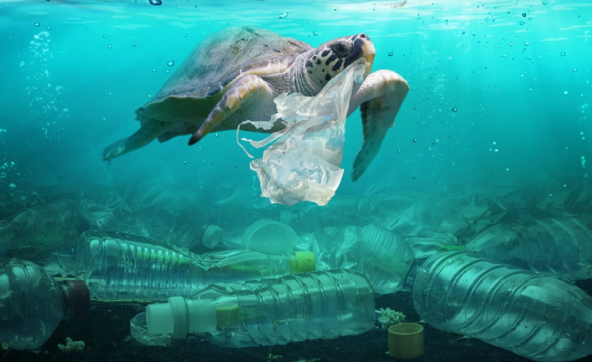
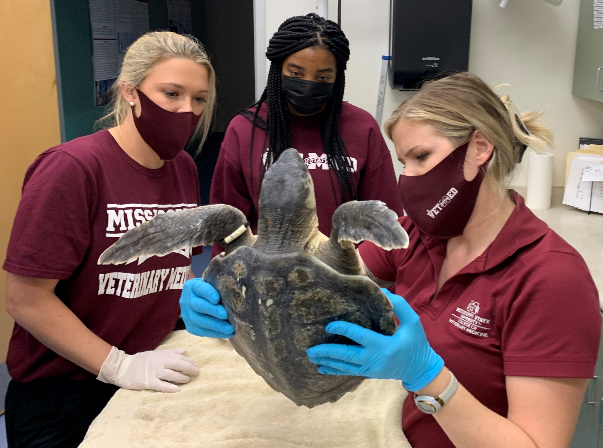

<!DOCTYPE html>
<html>
<head>
<meta name="viwe point" ::content="with=device-width,initical-scale=1.0">
<title>TURTLES OF SRI LANKA</title>
<link rel="stylesheet" href="./styless.css">
</head>
</html>
<body>
    <div class="div-bg">
        <nav>
            <div class="nav-links" id="test">
               <ul>
                   <li><a href="./index.html">HOME</a></li>
                   <li><a href="./secondpage.html">CATEGORIES</a></li>
                   <li><a href="#">THREAT</a></li>
                   <li><a href="./fourthpage.html">HIKKADUWA HATCHERY</a></li>
                   <li><a href="./contact.html">OTHER HATCHERIES</a></li>
                   <li><a href="./PURCHASE AND DONATIONS.html">PURCHASE AND DONATIONS</a></li>
               </ul>
            </div>
       </nav> 
             <!-------THREAT TO TURTLES--------->

  <section class="THREAT TO TURTLES">

    <h1 style="color: antiquewhite;">THREAT TO TURTLES</h1>
    <p><h3>
        Worldwide, six of the seven sea turtle species are classified as threatened or endangered due to human actions and lifestyles. From getting caught in fishing gear to people eating their meat and eggs, there are lots of ways that these animals are affected by people.<br>
        Incidental by-catch, illegal poaching of eggs, natural predation on eggs and hatchlings and habitat change and destruction are some of obvious threats faced by marine turtles in Sri Lanka.</h3></p>
   <br>
  <section>
        <div class="row">
            <div class="it-col">
                
                <div class="photo">     
                </div>
            </div>
            <div class="it-col">
                 
                 <div class="photo">      
                 </div>
            </div>    
            <div class="it-col">
                
                <div class="photo">               
            </div>
            </div>
            </div>
            </section>
            <div class="row">
                <div class="realm-col">
                <h2>What are the threats sea turtles face in Sri Lanka today?</h2>
                <P>Marine turtles in Sri Lanka face many threats, which can be mainly categorized as natural threats and human threats.<br>Natural threats that hinder the lives of these species are predators on the beach, such as birds, land and water monitors, dogs, jackals, and species of ants and crabs that may feast on the eggs on coastal beaches, or species of predators at sea who prey on hatchlings and older turtles in the ocean, such as whales, sharks, reef fishes, and even sea birds looking for food.<br>Natural disasters and phenomena such as floods, storms, tornados, and tidal waves can also cause severe destruction to the protection of these animals. Most turtle conservation centers in Sri Lanka were destroyed in the 2004 tsunami due to their close proximity to the ocean, and the rebuilding process was not a simple one.<br>Human threats are the biggest contributors to the killing and exploitation of sea turtles, with various actions being carried out at each life stage of the turtle.<br>Direct killing and harvesting of female turtles who arrive on beaches to lay their eggs, destruction of nesting and foraging grounds for human use, and increased human activities on beaches all affect the nesting stage of the turtle.

                    Pollution and obstacles on beaches, as well as hatchlings being exploited for the pet trade, affect the hatchling stage and their descent into the ocean.<br>Juveniles or younger turtles in the ocean die due to ingestion of plastic and debris, chemical and oil spills, along with entanglement in fishing gear and fishing nets.

                    Older and mating turtles die at sea due to boat strikes, entanglement in fishing gear, pollution, and other spills into the ocean.</P>
                <div class="reaml-col">
                <h2>Why is it important to protect sea turtles?</h2>
                <P>Apart from the fact that they are living creatures with a long and proud history that should undoubtedly be given the protection they require, sea turtles have contributed to the sustenance of oceanic eco systems and have maintained the health of world oceans since the beginning.<br>Sea turtles maintain a variety of marine organisms just by eating them. Green Turtles mainly consume seagrass, and by doing this, they prevent seagrass meadows from growing too long to the point where they may suffocate themselves, which is important because seagrass meadows provide homes for many young marine species as well as being a main provider of oxygen to the ocean.<br>Hawksbill Turtles consume toxic sponges in various eco-systems, which directly contributes to the long-term sustenance of coral reefs, which are not only the most diverse eco-systems in the world but also provide habitats and shelter for thousands of marine organisms, and even protect coastlines from wave action and storms.<br>Leatherbacks and loggerheads regulate the population of jellyfish and crustaceans through their consumption, respectively, which helps the ocean diversify more with fish and other organisms.

                    Sea turtles also provide habitat on their shells for many organisms such as barnacles, algae, and epibionts, which are the main source of food for fish and shrimp.
                    
                    And finally, because sea turtles can migrate long distances, they further diversify and maintain the ocean by transporting organisms on their shells to the various eco-systems they encounter.
                    
                    Therefore, it is crucial to conserve and ensure the safety of all species of sea turtles, which are considered “endangered,” some even critically, in today’s world.</P>
                    <div class="row">
                        <div class="me-col">
                            
                            <div class="photo">     
                            </div>
                        </div>
                        <div class="me-col">
                             
                             <div class="photo">      
                             </div>
                        </div>    
                        <div class="me-col">
                            
                            <div class="photo">               
                        </div>
                        </div>
                        </div>
                <div class="realm-col">
                <h2>What issues arise in Sea Turtle conservation in Sri Lanka and what can be done about it?</h2>
                <P>Turtle conservation in Sri Lanka is a serious issue that should be given more awareness and education among local communities. Out of the 15 conservation centers located and operating in Sri Lanka, only two are considered on a higher scale due to their ethical and meticulous care in the conservation of sea turtles. When it comes to conservation centers, there are many common issues that can be observed apart from the fact that they do not follow some crucial protective measures mentioned above, such as not partially shading hatcheries and keeping hatchlings for more than 24 hours. Injured and disabled turtles are usually given the same diet of fish, regardless of the species, which could adversely affect the health of some turtle species, such as Green Turtles who are herbivores. Moreover, hatchlings are kept in crowded pools for more than 24 hours, sometimes up to three weeks, and are only released when tourists and visitors pay to release the hatchling. Moreover, most conservation centers buy eggs from poachers, and while some consider this the correct manner to make sure the eggs are not used for food or medicine, paying poachers a large amount of money to acquire eggs only increases the profits they gain from the poaching industry and is more incentive for poachers to steal eggs and sell them to conservation centers<br>The main issues as to why such problems arise in sea turtle conservation centers in Sri Lanka is due to lack of funding and donations, little to no proper legislation and regulations in relation to turtle poaching, nest theft, and turtle meat in Sri Lanka, and most of all, because of the lack of awareness and education in Sri Lanka with regards to sea turtle conservation.<br>As we can observe from the above facts presented, Sri Lanka has a long way to go when it comes to a true and honest initiation of Sea Turtle conservation, and research and consideration on this matter is imperative to the protection of this wonderful species. The time to act is now!

                    I urge each and every one of you to give consideration to this matter, and to educate others and create more consensus and awareness on this matter, as it will affect these beautiful reptiles extremely positively in the long run.
                    
                    Let us all act now, and take matters into our own hands, because one plastic bag removed from the ocean, or one extra volunteer in a program, could make the biggest difference in the life of one sea turtle.</P>
                <div class="realm-col">
                <h3>Sources</h3>
                <p>University of Sri Jayewardenepura</p>
                </div>
                </div>
                </div>
                </div>
                </div>
                <div class="wrapper">
                    <div class="button">
                       <div class="icon">
                          <i class="fab fa-facebook-f"></i>
                       </div>
                       <span>Facebook</span>
                    </div>
                    <div class="button">
                       <div class="icon">
                          <i class="fab fa-twitter"></i>
                       </div>
                       <span>Twitter</span>
                    </div>
                    <div class="button">
                       <div class="icon">
                          <i class="fab fa-instagram"></i>
                       </div>
                       <span>Instagram</span>
                    </div>
                    <div class="button">
                       <div class="icon">
                          <i class="fab fa-linkedin"></i>
                       </div>
                       <span>linkedin</span>
                    </div>
                    <div class="button">
                       <div class="icon">
                          <i class="fab fa-youtube"></i>
                       </div>
                       <span>YouTube</span>
                    </div>
                 </div>
               